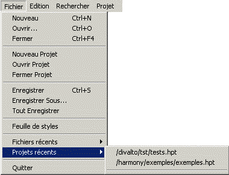
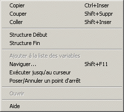

Un menu est une liste de choix qui spécifie les options ou groupes d’options proposés par un programme. Cette liste a une structure arborescente hiérarchisée : chaque choix peut ouvrir une nouvelle liste de choix (appelée sous-menu) qui, à leur tour, peuvent ouvrir de nouveaux sous-menus.
On distingue deux types de menu :
Les menus classiques, qui se présentent sous la forme d'une barre de choix horizontale, toujours affichée en haut de la fenêtre courante (une fenêtre ne peut afficher qu’un seul menu classique à la fois).
Exemple :

Les menus surgissants (aussi appelés menus contextuels ou menus popup), qui sont une liste de choix présentée verticalement dans une fenêtre spécifique. Ce type de menu est généralement affiché lorsque l'utilisateur clique, avec le bouton droit de la souris, sur une donnée ou une zone particulière de l'écran.
Exemple :
